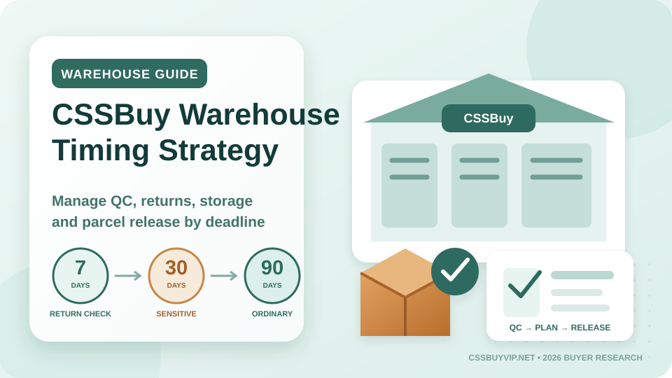

CSSBuy Warehouse Timing Guide 2026: The 7-Day, 30-Day and 90-Day Clock
A reverse purchase becomes risky at the exact moment it feels finished. You have paid for the product, the seller has shipped it inside China, and the order appears in the CSSBuy warehouse. Many buyers relax at that point and wait for the rest of the haul to arrive. That is precisely when several different clocks begin running.
CSSBuy’s current public information makes the timing problem clear. Orders that meet return conditions generally need action while they have been in the warehouse for fewer than seven days. Ordinary items can receive 90 days of free storage, while current CSSBuy product pages state that sensitive items receive 30 days. The public Q&A also says ordinary storage can be extended after 90 days for 15 yuan per order per month. These time limits are not interchangeable. A product can have months of storage left while its practical return opportunity is already disappearing.
The safest way to use a reverse-purchasing agent is not to think in terms of “waiting in the warehouse.” Think in terms of a warehouse decision window. Every item should move through inspection, acceptance, parcel planning and release on purpose.
The warehouse is a decision point, not a parking lot
CSSBuy receives the domestic parcel, checks the item, stores it, and lets the buyer decide what happens next. That creates an advantage that direct international shipping does not always offer: you can see the item before paying to send it across borders.
CSSBuy describes warehouse quality inspection as covering details such as style, quantity, color, size, model and visible damage. Its Ship For Me service also lists QC checking and warehouse photos so buyers can identify problems before international shipment.
The mistake is treating those photos as decoration. Their value is highest only while you can still act on them. When an item arrives, review it before waiting for unrelated orders. A warehouse image is evidence; evidence has a shelf life when return windows are short.
Clock One: the return window is the fastest clock
CSSBuy’s current Q&A states that a return can be handled when the return conditions are met, the item has been in the warehouse for fewer than seven days, and the return shipping fee is paid. Its About page also describes returning products that do not meet the buyer’s required standard within seven days.
That does not mean every item has a guaranteed seven-day return. Seller policy, category, condition, purchase terms and order status still matter. The practical lesson is simpler: if something is wrong, the first week is not the time to wait.
Create a fixed arrival routine. On the day the order becomes “In Warehouse,” check four things: identity, specification, condition and completeness. Confirm the correct item, color, size, model and quantity; inspect visible damage; and verify that promised accessories or detachable parts are present. If anything fails, document it immediately and use the order’s communication channel while the transaction is still fresh.
Clock Two: ordinary storage is a planning buffer
CSSBuy currently advertises 90 days of free warehouse storage for ordinary items. Its public Q&A says the count begins from the “In Warehouse” status. After that period, CSSBuy states that storage can be extended for 15 yuan per order per month. If an order passes the free period without shipment or extension, the public information says it may be treated as abandoned and destroyed.
Treat those 90 days as a parcel-building buffer rather than a target. A practical strategy is to divide them into three zones. Days 0–7 are the correction zone: inspect and resolve possible returns. Days 8–60 are the consolidation zone: let compatible items arrive and decide which products belong together. Days 61–90 are the release zone: stop adding unnecessary orders, verify route compatibility and prepare the parcel.
This structure prevents the common habit of using storage time as permission to keep shopping indefinitely.
Clock Three: sensitive items may have a shorter horizon
Current CSSBuy product pages show an important distinction: common items are listed with 90 days of free storage, while sensitive items are listed with 30 days. That matters because a mixed haul may not have one shared deadline.
Sensitive classifications can also affect route availability. CSSBuy’s shipping estimator asks buyers to identify attributes such as electric items, liquids, batteries, cosmetics, magnetic products, watches, perfume, food, shoes and other categories. Some shipping methods cannot transport certain attributes.
Do not build a 90-day plan around a product that CSSBuy is currently treating as a 30-day storage item. Keep a separate deadline column for anything marked sensitive or restricted, and follow the live order information if it differs from a saved spreadsheet.
Use a three-status warehouse ledger
Most buyer spreadsheets track only “ordered” and “arrived.” Add three warehouse statuses: Review Now, Accepted, and Parcel Assigned.
“Review Now” starts when the item enters the warehouse. “Accepted” means the item passed your review but may still need route planning. “Parcel Assigned” means you have decided which international shipment the item belongs to.
This separates product quality from shipping strategy. A hoodie may be accepted today but wait for other clothing. A fragrance may need a different route. A structured bag may need packing instructions that make it unsuitable for the same compression plan as soft clothes.
Your ledger should also include warehouse arrival date, storage deadline, item category, estimated weight, sensitive-item flag and any required packing note.
Consolidate by compatibility, not arrival order
CSSBuy’s Ship For Me service promotes package consolidation because separate warehouse packages can be combined into a larger outbound parcel. Consolidation can reduce duplicated packaging and repeated base charges, but the best parcel is not always the parcel containing everything.
Group items by shipping compatibility. Soft textiles often work well together. Fragile goods may need reinforcement. Shoes and structured bags can be damaged by aggressive compression. Batteries, liquids, perfume, magnets and other restricted categories may reduce the routes available to the whole parcel.
Before combining items, ask three questions: can every item use the same route, can one packing method protect all of them, and does one restricted product make the rest of the parcel harder to ship? If one item forces a much more expensive or restrictive route, splitting can be smarter.
Match packing instructions to the product’s failure mode
CSSBuy lists services including consolidation, vacuum packaging, reinforced packaging and label or invoice handling. Select them because of a specific risk, not because they sound safer.
Vacuum packaging is useful for compressible clothing when volume matters, but it is a poor default for structured bags, shoes or fragile decoration. Reinforcement can protect fragile products but may add material and dimensions. Removing unnecessary external packaging may reduce volume, while a retail box can still have protective or collector value.
Write instructions that describe the result you want. “Vacuum-pack the hoodies only; do not compress the bag” is executable. “Make it as small as possible” is not. “Reinforce the ceramic item and keep it separated from metal accessories” is better than “pack carefully.”
Do not confuse stored weight with final chargeable weight
CSSBuy’s cost calculator asks for product weight, parcel volume, destination and commodity attributes because international lines can calculate costs differently. Its current estimator explains that many routes use the greater of actual weight and volumetric weight, with volumetric formulas that can use divisors such as 5000 or 6000. Some China Post-branded methods are described as charging by actual weight instead.
This is why parcel design belongs inside the warehouse workflow. A bulky but light haul may become cheaper through safe compression or package removal. A dense parcel may gain little from aggressive volume reduction. Check the live calculator with realistic dimensions instead of assuming every kilogram costs the same.
CSSBuy also describes the international shipping payment at submission as a deposit based on estimated weight, destination and selected method. The final fee is determined after the logistics company verifies package size and weight, and differences are reconciled through the buyer’s account.
Create a parcel-release day
Once the important items have arrived, schedule one parcel-release review. First, scan storage ages. Second, remove products with unresolved QC questions. Third, verify the route can accept every commodity attribute in the parcel. Fourth, choose packing services that solve a real problem. Fifth, run a fresh shipping estimate with the best available weight and dimensional information.
Only then submit the parcel. This prevents a common failure: paying international freight for an item you had not fully accepted, or discovering after consolidation that one sensitive product removed the route you planned to use.
Frequently Asked Questions
How quickly should I review a CSSBuy warehouse arrival?
As soon as the order reaches “In Warehouse.” CSSBuy’s current return guidance refers to items being in the warehouse for fewer than seven days when return conditions are met, so delaying review can reduce your options.
How long does CSSBuy currently store ordinary items for free?
CSSBuy currently publishes 90 days of free storage for ordinary items, counted from the “In Warehouse” status.
Do sensitive items always get the same 90 days?
Not according to current CSSBuy product-page information. Those pages distinguish common items with 90 days of free storage from sensitive items with 30 days. Check the live order status because product classification can matter.
Can warehouse storage be extended?
CSSBuy’s current public Q&A states that ordinary storage can be extended after the free 90-day period for 15 yuan per order per month. Confirm the live account rule before depending on an extension.
Does consolidation mean I should ship every stored item together?
No. Consolidate items that are compatible in route, risk and packing needs. A restricted, fragile or unusually bulky item can make a separate parcel more sensible.
Why can final freight differ from the estimate?
CSSBuy describes the first international shipping payment as a deposit. The final fee is based on the package size and weight verified by the shipping company, and any difference is reconciled through the account.
The warehouse is not just where purchases wait. Used correctly, it is where a reverse purchase becomes controllable. The advantage is not the number of days an item can sit on a shelf. It is the chance to catch a mistake in China, preserve your return options, group compatible products, design the parcel and estimate freight before international shipping becomes irreversible.
Editorial note: This article was fact-checked against CSSBuy’s current About, Ship For Me, Buy For Me, shipping-estimator, product-page and public Q&A information on August 7, 2026. Live order rules and route availability can change.